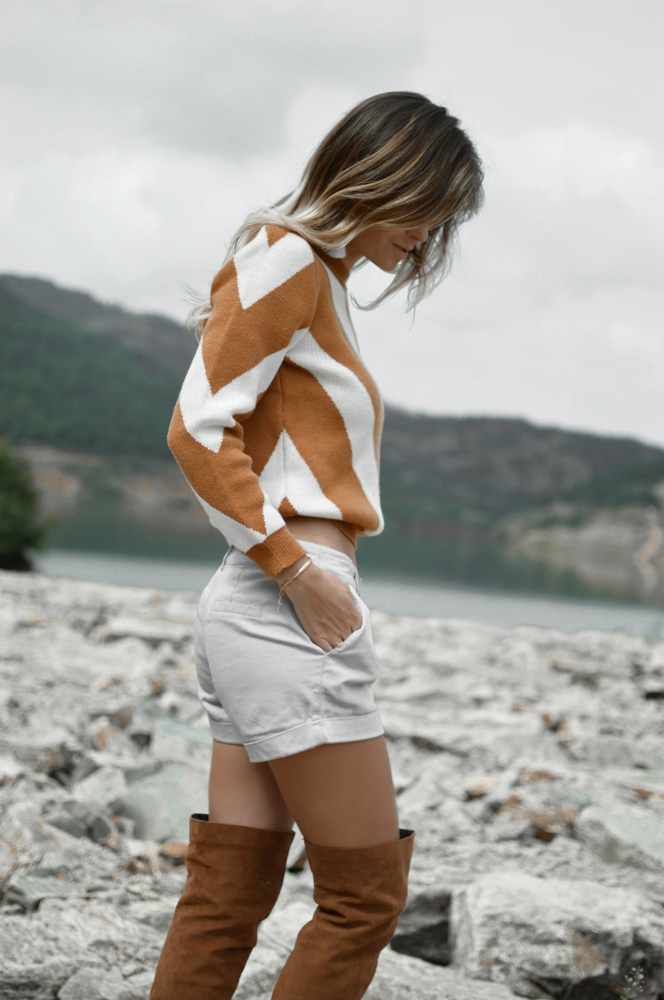
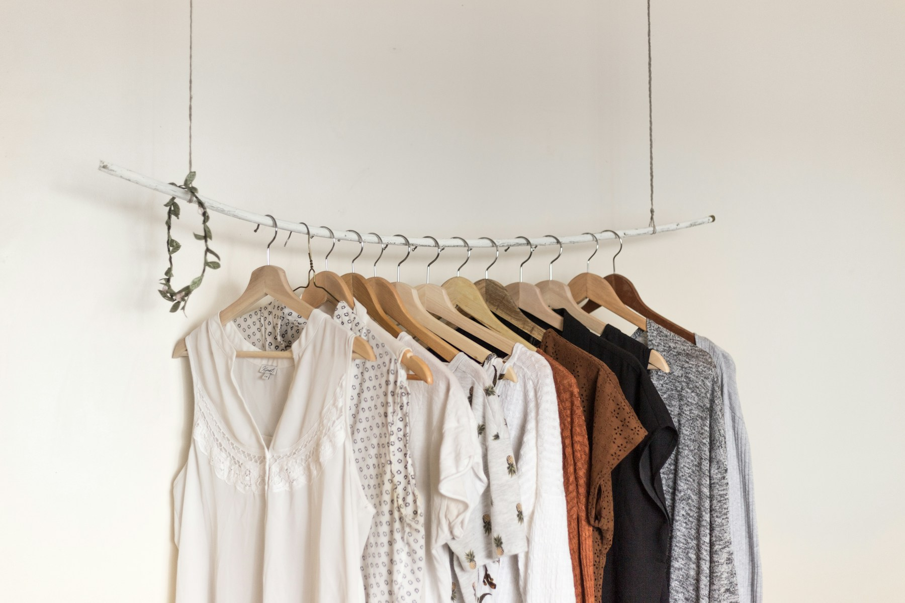

Take the
long way
home.
An early look at the references.View collections
A preview of Collection 01
MERCER VALE / Collection 01A first look
at the collection.
The first collection is taking shape around outer layers, everyday tops and knitwear. These studies bring together the silhouettes and combinations we’re working from.
Explore women & menThe collections.
Women & Men.
Six collections. Eight photographs in each.
Open a study to see the full frame.
Women / Outerwear

A patterned sweater, photographed
away from the city.
Knitwear,
out of town.
How we’d
wear it.
A closer look at the combinations
in our three reference studies.
Let the coat
set the shape.
Tie it at the waist and keep the layers underneath simple. Here, black gives the camel colour a clean edge.

The wardrobe referenceAbout
the house.
MERCER VALE is an independent clothing house in London. We’re developing our first collection by looking at how clothes sit together: the length of a coat over denim, or the shape of a sweater above a pair of shorts. These are the references we’re working from.
Contact the houseThe details
so far.
Have another question?
Write to the house.
When will Collection 01 be available?
We’re still developing the collection and haven’t announced a launch date. You can email us about the launch.
Can I place an order?
Orders haven’t opened yet. This page shares our references while the collection is in development.
Where can I find measurements?
Our size guide and garment measurements aren’t ready to publish. For questions about fit, write to us.
Are the clothes pictured made by Mercer Vale?
The pictured clothes are not Mercer Vale products. These Unsplash references show the proportions, colours and styling we’re exploring for Collection 01.
Write to
the house.
For questions about Collection 01,
write to hello@mercervale.com.